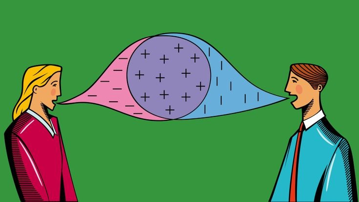

Listening Between the Lines
Discourse Studies has genuinely altered the way I look at everyday interactions. I now realize that many conflicts are not caused by what we say, but by how we frame it. Learning to enact discourse has helped me resolve issues by reshaping arguments, choosing timing carefully, and anticipating responses. Language feels less accidental and more strategic now.
At the same time, this awareness can be uncomfortable. I often catch implicatures in conversations that others may not even be aware of. Sometimes the speaker never intended that hidden meaning, but as a student of linguistics, I can’t unhear it. Once you start noticing layers of meaning, ignorance is no longer an option.
I never imagined concepts like turn-taking, feedback, repair, discourse markers, or response tokens would matter beyond theory. Yet they constantly appear in daily life. In a classroom, lack of feedback can quietly discourage a teacher. In casual conversations, someone who never allows turns often reveals more about their personality than their words. Failed repairs whether self-initiated or other-initiated can escalate minor misunderstandings into lasting tension.
This course has trained my attention. I don’t just listen anymore; I analyze. Discourse Studies hasn’t made communication easier, but more conscious and intentional overall.